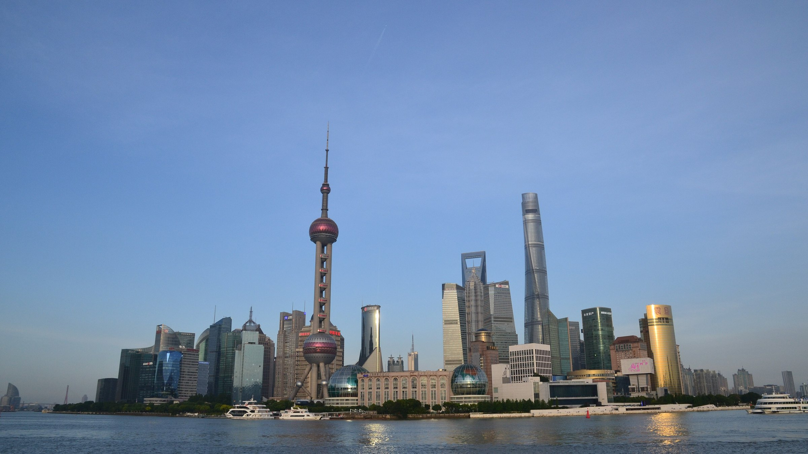

The Bund
The old waterfront remains the city’s great set piece: a curve of early-twentieth-century banks and hotels facing the new skyline of Pudong. Walk it at the end of the day, when the river is busy and the lights begin to come up.

Shanghai is a city of appetite: open to the new, and just as willing to take back the layers of its past. The Bund still faces the towers of Pudong across the Huangpu, and in the old concessions — their Art Deco façades carefully restored — you can feel the cosmopolitan city that once drew traders, refugees, missionaries and filmmakers, and that later became the setting of Tintin’s Blue Lotus. Jazz once drifted over this river; the first Chinese cinema was born here; so was the Communist Party of China. The tone of the place is freer, more outward-facing, than that of the capital, and the city is not shy about it.
Enlight is based here, and it is a straightforward international arrival, with flights and high-speed rail onward toward Shiyan — the station for Wudang, and for Zhuxi. Come in through Shanghai and the east is already at your feet; the way inland, toward the heartland, is short.
Late spring and autumn are the most comfortable seasons in Shanghai: mild days, and the Bund and the old streets at their easiest to walk. Summer is hot, humid, and often wet; winter is damp and grey rather than bitterly cold.
| City | 1Jan | 2Feb | 3Mar | 4Apr | 5May | 6Jun | 7Jul | 8Aug | 9Sep | 10Oct | 11Nov | 12Dec |
|---|---|---|---|---|---|---|---|---|---|---|---|---|
| Shanghai |
Shanghai has two international airports: Pudong (PVG), the main long-haul gateway, and Hongqiao (SHA), closer to the centre and used for many domestic and regional flights. Maglev, metro and taxis connect both to the city.
Hongqiao Railway Station, beside the older airport, is the principal high-speed hub, with frequent services to Hangzhou, Beijing, Nanjing and beyond. Shanghai Railway Station and Shanghai South handle additional lines.
The metro is extensive and clearly signed in English. Taxis and Didi are easy to use; the Bund, the former concessions and the older lanes are best seen on foot. Ferries still cross the Huangpu, a simple pleasure in a city of towers.
April, May, October and November are the months most travellers prefer. June can bring the plum rains; July and August are hot and humid, with the chance of heavy showers. Winter is chilly and overcast, but the city stays fully open, and the lights along the river have a particular clarity on a clear night.
The old waterfront remains the city’s great set piece: a curve of early-twentieth-century banks and hotels facing the new skyline of Pudong. Walk it at the end of the day, when the river is busy and the lights begin to come up.
In the former French and International concessions, plane trees still line the streets, and Art Deco apartment houses have been carefully brought back. It is a neighbourhood for walking: small museums, cafés, and a sense of the city that once fascinated the whole of the East.
A sixteenth-century scholar’s garden at the edge of the old Chinese city: rockeries, pavilions and koi ponds, still one of the most complete classical gardens in the east of the country, though it is best visited early, before the courtyards fill.
Nanjing Road is the famous shopping street that runs inland from the Bund. The more interesting Shanghai is often one turning away: the smaller lanes, the food shops, and the ordinary life that still sits behind the display.
Enlight is based in Shanghai. From here, the way inland toward Wudang and Zhuxi is short — or we can shape a journey around the city itself.